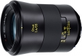

器材库 > 35mm画幅MF定焦镜头 > Otus 55/1.4

详细规格
镜头类型
标准镜头
发布日期
2013-10-08
厂家推荐价格
3,999.00 （美元）
焦距
55mm
最大光圈
f/1.4
最小光圈
f/16
镜头结构
12片/10组
非球面镜片
1片
低/超低色散镜片
6片
最近对焦距离
50cm
最大放大倍率
0.15倍
滤镜口径
77mm
镜头卡口
Canon EF, Nikon F
防抖
否
颜色
黑色
尺寸
92x141mm
重量
970g
Tuber2015-01-15 23:004.5 分
操作性 4.00耐用性 5.00性价比 3.00解像力 5.00色彩还原 5.00机械结构 5.00
韵文2015-01-09 12:36
EverKiss2014-09-22 21:234.83 分
操作性 4.50耐用性 4.50性价比 5.00解像力 5.00色彩还原 5.00机械结构 5.00
fox0072014-08-31 11:295 分
操作性 5.00耐用性 5.00性价比 5.00解像力 5.00色彩还原 5.00机械结构 5.00
fox0072014-08-31 11:28
fox0072014-08-31 11:27
bjrichard2014-07-07 08:304.92 分
操作性 5.00耐用性 4.50性价比 5.00解像力 5.00色彩还原 5.00机械结构 5.00
zhengj2014-06-05 20:284.67 分
操作性 4.50耐用性 5.00性价比 3.50解像力 5.00色彩还原 5.00机械结构 5.00
zhengj2014-06-04 22:58
一碗水不平002014-06-04 22:084.33 分
操作性 4.00耐用性 5.00性价比 2.00解像力 5.00色彩还原 5.00机械结构 5.00
ericgy2014-05-29 09:464.83 分
操作性 5.00耐用性 5.00性价比 4.00解像力 5.00色彩还原 5.00机械结构 5.00
jiaozhibov2014-05-03 12:024.17 分
操作性 4.50耐用性 5.00性价比 0.50解像力 5.00色彩还原 5.00机械结构 5.00
feversaga2013-12-23 11:455 分
操作性 5.00耐用性 5.00性价比 5.00解像力 5.00色彩还原 5.00机械结构 5.00
cybertron2013-11-24 20:444.33 分
操作性 4.50耐用性 4.00性价比 3.50解像力 5.00色彩还原 4.50机械结构 4.50
产品图 / 样片
评测 / 相关文章
- 至臻完美 卡尔蔡司Otus 55/1.4详细评测 （存档）
- 谁与争锋 Otus 55/1.4与适马50/1.4A对比评测 （存档）
- ［试用］蔡司OTUS 55/1.4开箱及大光圈镜头对比 （存档）
- ［试用］蔡司55/1.4 Otus与5支标头的粗略比较 （存档）
- ［试用］蔡司Otus 55/1.4全开光圈人像 （存档）
- ［试用］卡尔蔡司Otus 55/1.4评测样张 （存档）
- ［资讯］卡尔蔡司Otus 55/1.4外观图赏 （存档）